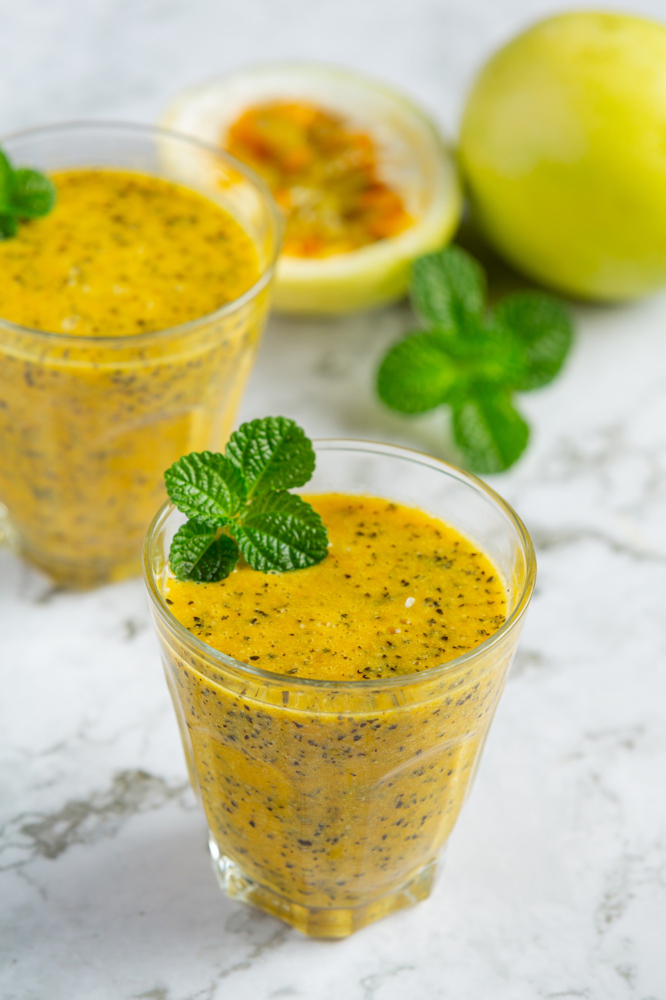

- Hidrate a gelatina com a água por 2 minutos, e leve ao micro-ondas por 30 segundos;
- No liquidificador, bata o leite condensado, o creme de leite e o suco de maracujá até ficar bem homogêneo;
- Adicione a gelatina hidratada e bata apenas para misturar;
- Coloque a mistura em uma travessa, cubra com papel filme e leve à geladeira por no mínimo 2 horas.
- Sirva na travassa ou se preferir, em copinhos. Aproveite!